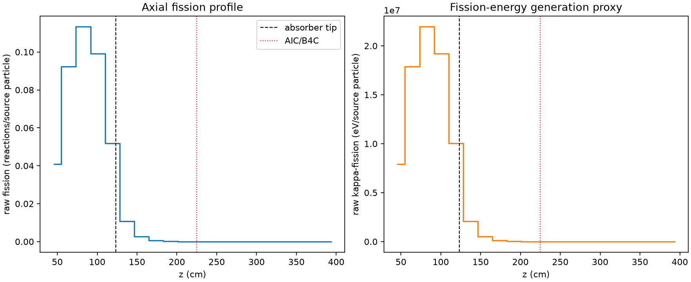
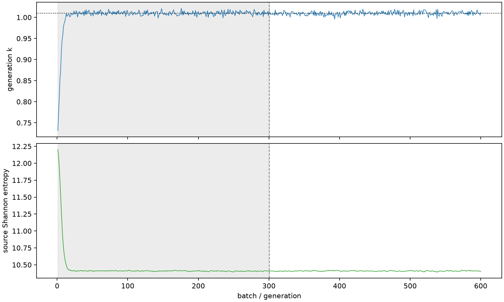

| field | value |
|---|---|
| experiment | V2-STAGE_256_OGRENCI_01-0020 |
| k | 1.0097900343110362 |
| MC standard error | 0.00017562356080689552 |
| seconds | 1028.869909155008 |
| acceptance | not_assessed |
| convergence | review_required |
Completed is output integrity only; physical and statistical review required. Zero tallies do not prove zero production or zero uncertainty.
| diagnostic | value |
|---|---|
| geometric fuel voxels | 5280 |
| zero fission tally voxels | 1772 |
| low signal fuel voxels | 2841 |
| low signal fission share | 9.649053660940762e-05 |
| low signal kappa share | 9.652853610370218e-05 |
| important fission share | 0.9502278636818913 |
| previous filter included | 2439 |
| duration estimate s | 1562.5173488400023 |
| actual minus estimate s | -533.6474396849944 |
| fission relative MC error | statistics |
|---|---|
| all_geometric_fuel | {"voxels": 5280, "positive_mean_voxels": 3508, "zero_mean_voxels": 1772, "undefined_relative_error_voxels": 1772, "median": 0.027889965352175375, "p95": 0.9697420748655767, "maximum": 1.0000000000000002} |
| low_signal | {"voxels": 2841, "positive_mean_voxels": 1069, "zero_mean_voxels": 1772, "undefined_relative_error_voxels": 1772, "median": 0.6000998904436419, "p95": 1.0, "maximum": 1.0000000000000002} |
| important_95pct | {"voxels": 1278, "positive_mean_voxels": 1278, "zero_mean_voxels": 0, "undefined_relative_error_voxels": 0, "median": 0.004944135132677076, "p95": 0.007437355413948282, "maximum": 0.00885849830319398} |
| outside_previous_filter | {"voxels": 2841, "positive_mean_voxels": 1069, "zero_mean_voxels": 1772, "undefined_relative_error_voxels": 1772, "median": 0.6000998904436419, "p95": 1.0, "maximum": 1.0000000000000002} |
| kappa_fission relative MC error | statistics |
|---|---|
| all_geometric_fuel | {"voxels": 5280, "positive_mean_voxels": 3508, "zero_mean_voxels": 1772, "undefined_relative_error_voxels": 1772, "median": 0.02783748977023363, "p95": 0.9694880907027176, "maximum": 1.0000000000000002} |
| low_signal | {"voxels": 2841, "positive_mean_voxels": 1069, "zero_mean_voxels": 1772, "undefined_relative_error_voxels": 1772, "median": 0.5993345975349522, "p95": 1.0, "maximum": 1.0000000000000002} |
| important_95pct | {"voxels": 1278, "positive_mean_voxels": 1278, "zero_mean_voxels": 0, "undefined_relative_error_voxels": 0, "median": 0.0049374862953724, "p95": 0.007427038627790347, "maximum": 0.00884544798663824} |
| outside_previous_filter | {"voxels": 2841, "positive_mean_voxels": 1069, "zero_mean_voxels": 1772, "undefined_relative_error_voxels": 1772, "median": 0.5993345975349522, "p95": 1.0, "maximum": 1.0000000000000002} |
| axial bin | fission share | kappa-fission share |
|---|---|---|
| 1 | 0.09927284968571824 | 0.09927574773245926 |
| 2 | 0.22426809408279977 | 0.22426204482043763 |
| 3 | 0.2752685566091549 | 0.27525989865059897 |
| 4 | 0.24082147070043414 | 0.24081414132003248 |
| 5 | 0.12573908275268897 | 0.12574325085802915 |
| 6 | 0.026130872219514118 | 0.026142087789383154 |
| 7 | 0.006408822673206092 | 0.006411652836103222 |
| 8 | 0.0015956567062189665 | 0.0015963473566174078 |
| 9 | 0.0003766219244230695 | 0.0003768060723037438 |
| 10 | 9.305697782013898e-05 | 9.309576780713772e-05 |
| 11 | 1.9225195801290112e-05 | 1.923418195280739e-05 |
| 12 | 3.9459276025282705e-06 | 3.947099125863255e-06 |
| 13 | 1.33994816173668e-06 | 1.3408408916613004e-06 |
| 14 | 4.039358858650389e-07 | 4.040146568472352e-07 |
| 15 | 6.605702224640692e-10 | 6.59600744240794e-10 |
| 16 | 0.0 | 0.0 |
| 17 | 0.0 | 0.0 |
| 18 | 0.0 | 0.0 |
| 19 | 0.0 | 0.0 |
| 20 | 0.0 | 0.0 |
Histories include the inactive-to-active transition at batch 300. kappa-fission approximates fission energy production, not total heat deposition.

